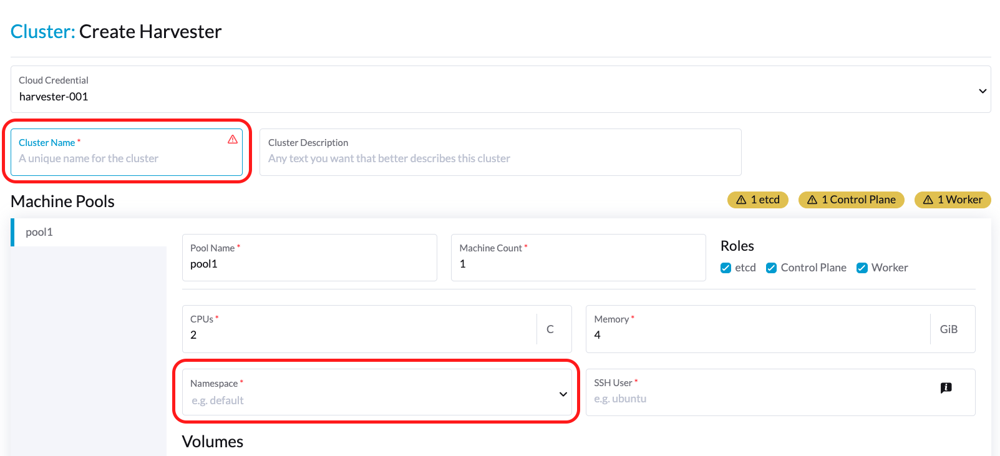
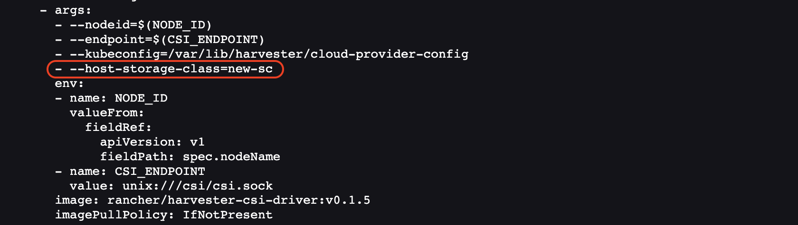
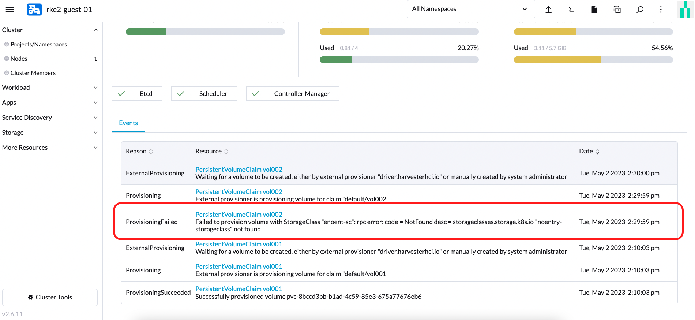
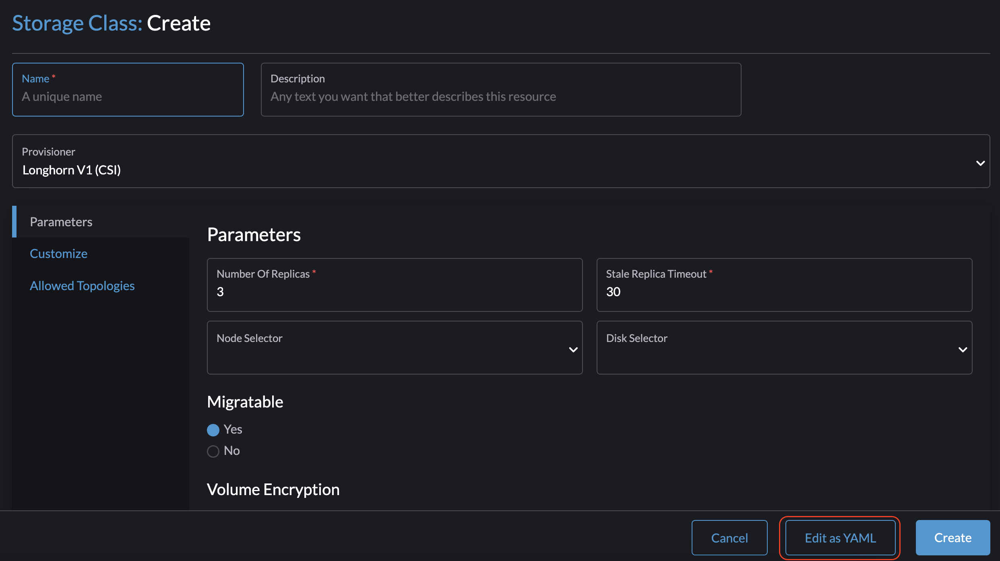
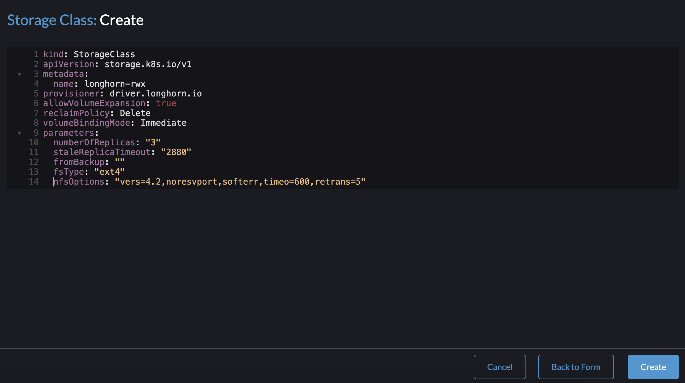
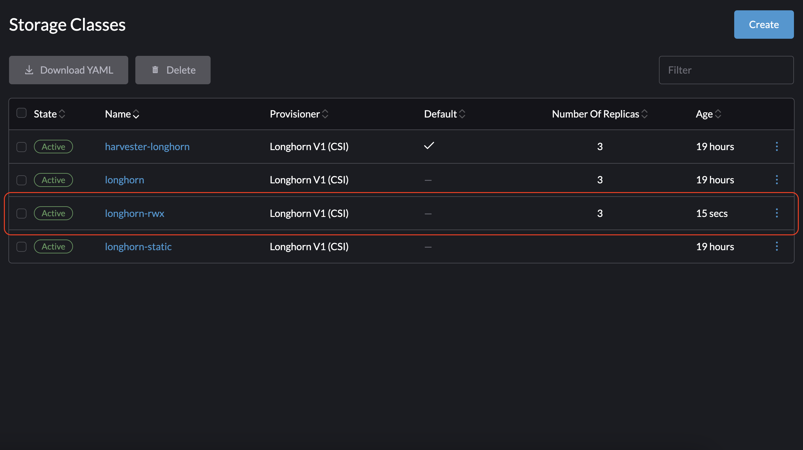
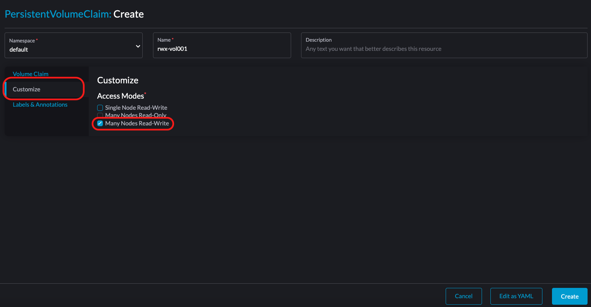

Harvester CSI 驱动程序
Harvester 容器存储接口 (CSI) 驱动程序提供了一个标准的 CSI 接口，供来宾 Kubernetes 集群使用。它连接到主集群，并将主机卷热插拔到虚拟机中，以提供原生存储性能。
Harvester CSI 驱动程序支持以下功能：
| Harvester CSI 驱动程序版本 | SUSE Virtualization 版本 | 存储分层 | RWX 卷 | 在线调整大小 | 第三方存储 | 卷快照 |
|---|---|---|---|---|---|---|
0.1.15 |
所有版本 |
✔ |
✖ |
✖ |
✖ |
✖ |
0.1.20 |
v1.4 及更高版本 |
✔ |
✔ |
✖ |
✖ |
✖ |
0.1.24 |
v1.6 及更高版本 |
✔ |
✔ |
✔ |
✔ |
✖ |
0.1.25 |
v1.7 及更高版本 |
✔ |
✔ |
✔ |
✔ |
✔ |
正在部署
先决条件
-
Kubernetes 集群建立在 SUSE Virtualization 虚拟机之上。
-
作为 Kubernetes 节点的 SUSE Virtualization 虚拟机位于同一名称空间中。
|
目前，Harvester CSI 驱动程序仅支持单节点读写（RWO）卷。请查看 问题 #1992 以获取有关可能的多节点只读（ROX）和读写（RWX）支持的信息。 |
使用 Harvester RKE2 节点驱动程序进行部署
当使用 Rancher RKE2 节点驱动程序启动 Kubernetes 集群时，选择 Harvester 云提供程序时，Harvester CSI 驱动程序将自动部署。

在 RKE2 集群中手动安装 CSI 驱动程序
如果您希望在不启用 Harvester 云提供程序的情况下安装 Harvester CSI 驱动程序，可以参考以下步骤：
手动安装的先决条件
确保您已满足以下先决条件：
-
您的系统上已安装
kubectl和jq。 -
您拥有适用于裸机 Harvester 集群的
kubeconfig文件。您可以在某个 Harvester 管理节点的/etc/rancher/rke2/rke2.yaml路径中找到kubeconfig文件。export KUBECONFIG=/path/to/your/harvester-kubeconfig
执行以下步骤以手动部署 Harvester CSI 驱动程序：
部署 Harvester CSI 驱动程序
-
生成
cloud-config。您可以使用 generate_addon_csi.sh 脚本生成cloud-config文件。它可以在 harvester/harvester-csi-driver仓库中找到。<serviceaccount name>`通常对应于您的来宾集群名称，而<namespace>`应与机器池的名称空间匹配。./generate_addon_csi.sh <serviceaccount name> <namespace> RKE2
生成的输出将类似于以下内容：
########## cloud-config ############ apiVersion: v1 clusters: - cluster: <token> server: https://<YOUR HOST HARVESTER VIP>:6443 name: default contexts: - context: cluster: default namespace: default user: rke2-guest-01-default-default name: rke2-guest-01-default-default current-context: rke2-guest-01-default-default kind: Config preferences: {} users: - name: rke2-guest-01-default-default user: token: <token> ########## cloud-init user data ############ write_files: - encoding: b64 content: YXBpVmVyc2lvbjogdjEKY2x1c3RlcnM6Ci0gY2x1c3RlcjoKICAgIGNlcnRpZmljYXRlLWF1dGhvcml0eS1kYXRhOiBMUzB0TFMxQ1JVZEpUaUJEUlZKVVNVWkpRMEZVUlMwdExTMHRDazFKU1VKbFZFTkRRVklyWjBGM1NVSkJaMGxDUVVSQlMwSm5aM0ZvYTJwUFVGRlJSRUZxUVd0TlUwbDNTVUZaUkZaUlVVUkVRbXg1WVRKVmVVeFlUbXdLWTI1YWJHTnBNV3BaVlVGNFRtcG5NVTE2VlhoT1JGRjNUVUkwV0VSVVNYcE5SRlY1VDFSQk5VMVVRVEJOUm05WVJGUk5lazFFVlhsT2FrRTFUVlJCTUFwTlJtOTNTa1JGYVUxRFFVZEJNVlZGUVhkM1dtTnRkR3hOYVRGNldsaEtNbHBZU1hSWk1rWkJUVlJaTkU1VVRURk5WRkV3VFVSQ1drMUNUVWRDZVhGSENsTk5ORGxCWjBWSFEwTnhSMU5OTkRsQmQwVklRVEJKUVVKSmQzRmFZMDVTVjBWU2FsQlVkalJsTUhFMk0ySmxTSEZEZDFWelducGtRa3BsU0VWbFpHTUtOVEJaUTNKTFNISklhbWdyTDJab2VXUklNME5ZVURNeFZXMWxTM1ZaVDBsVGRIVnZVbGx4YVdJMGFFZE5aekpxVVdwQ1FVMUJORWRCTVZWa1JIZEZRZ292ZDFGRlFYZEpRM0JFUVZCQ1owNVdTRkpOUWtGbU9FVkNWRUZFUVZGSUwwMUNNRWRCTVZWa1JHZFJWMEpDVWpaRGEzbEJOSEZqYldKSlVESlFWVW81Q2xacWJWVTNVV2R2WjJwQlMwSm5aM0ZvYTJwUFVGRlJSRUZuVGtsQlJFSkdRV2xCZUZKNU4xUTNRMVpEYVZWTVdFMDRZazVaVWtWek1HSnBZbWxVSzJzS1kwRnhlVmt5Tm5CaGMwcHpMM2RKYUVGTVNsQnFVVzVxZEcwMVptNTZWR3AxUVVsblRuTkdibFozWkZRMldXWXpieTg0ZFRsS05tMWhSR2RXQ2kwdExTMHRSVTVFSUVORlVsUkpSa2xEUVZSRkxTMHRMUzBLCiAgICBzZXJ2ZXI6IGh0dHBzOi8vMTkyLjE2OC4wLjEzMTo2NDQzCiAgbmFtZTogZGVmYXVsdApjb250ZXh0czoKLSBjb250ZXh0OgogICAgY2x1c3RlcjogZGVmYXVsdAogICAgbmFtZXNwYWNlOiBkZWZhdWx0CiAgICB1c2VyOiBya2UyLWd1ZXN0LTAxLWRlZmF1bHQtZGVmYXVsdAogIG5hbWU6IHJrZTItZ3Vlc3QtMDEtZGVmYXVsdC1kZWZhdWx0CmN1cnJlbnQtY29udGV4dDogcmtlMi1ndWVzdC0wMS1kZWZhdWx0LWRlZmF1bHQKa2luZDogQ29uZmlnCnByZWZlcmVuY2VzOiB7fQp1c2VyczoKLSBuYW1lOiBya2UyLWd1ZXN0LTAxLWRlZmF1bHQtZGVmYXVsdAogIHVzZXI6CiAgICB0b2tlbjogZXlKaGJHY2lPaUpTVXpJMU5pSXNJbXRwWkNJNklreGhUazQxUTBsMWFsTnRORE5TVFZKS00waE9UbGszTkV0amNVeEtjM1JSV1RoYVpUbGZVazA0YW1zaWZRLmV5SnBjM01pT2lKcmRXSmxjbTVsZEdWekwzTmxjblpwWTJWaFkyTnZkVzUwSWl3aWEzVmlaWEp1WlhSbGN5NXBieTl6WlhKMmFXTmxZV05qYjNWdWRDOXVZVzFsYzNCaFkyVWlPaUprWldaaGRXeDBJaXdpYTNWaVpYSnVaWFJsY3k1cGJ5OXpaWEoyYVdObFlXTmpiM1Z1ZEM5elpXTnlaWFF1Ym1GdFpTSTZJbkpyWlRJdFozVmxjM1F0TURFdGRHOXJaVzRpTENKcmRXSmxjbTVsZEdWekxtbHZMM05sY25acFkyVmhZMk52ZFc1MEwzTmxjblpwWTJVdFlXTmpiM1Z1ZEM1dVlXMWxJam9pY210bE1pMW5kV1Z6ZEMwd01TSXNJbXQxWW1WeWJtVjBaWE11YVc4dmMyVnlkbWxqWldGalkyOTFiblF2YzJWeWRtbGpaUzFoWTJOdmRXNTBMblZwWkNJNkltTXlZak5sTldGaExUWTBNMlF0TkRkbU1pMDROemt3TFRjeU5qWXpNbVl4Wm1aaU5pSXNJbk4xWWlJNkluTjVjM1JsYlRwelpYSjJhV05sWVdOamIzVnVkRHBrWldaaGRXeDBPbkpyWlRJdFozVmxjM1F0TURFaWZRLmFRZmU1d19ERFRsSWJMYnUzWUVFY3hmR29INGY1VnhVdmpaajJDaWlhcXB6VWI0dUYwLUR0cnRsa3JUM19ZemdXbENRVVVUNzNja1BuQmdTZ2FWNDhhdmlfSjJvdUFVZC04djN5d3M0eXpjLVFsTVV0MV9ScGJkUURzXzd6SDVYeUVIREJ1dVNkaTVrRWMweHk0X0tDQ2IwRHQ0OGFoSVhnNlMwRDdJUzFfVkR3MmdEa24wcDVXUnFFd0xmSjdEbHJDOFEzRkNUdGhpUkVHZkUzcmJGYUdOMjdfamR2cUo4WXlJQVd4RHAtVHVNT1pKZUNObXRtUzVvQXpIN3hOZlhRTlZ2ZU05X29tX3FaVnhuTzFEanllbWdvNG9OSEpzekp1VWliRGxxTVZiMS1oQUxYSjZXR1Z2RURxSTlna1JlSWtkX3JqS2tyY3lYaGhaN3lTZ3o3QQo= owner: root:root path: /var/lib/rancher/rke2/etc/config-files/cloud-provider-config permissions: '0644' -
将`cloud-init user data`内容复制并粘贴到*机器池* > 显示高级 > 用户数据。

在您应用上述cloud-init用户数据后，将创建`cloud-provider-config`文件。您可以在来宾Kubernetes节点的路径`/var/lib/rancher/rke2/etc/config-files/cloud-provider-config`上找到它。
-
将*云提供商*配置为*默认 - RKE2嵌入式*或*外部*。

-
选择*创建*以创建您的RKE2集群。
-
一旦RKE2集群准备就绪，从Rancher市场安装*Harvester CSI驱动程序*图表。默认情况下，您无需更改*cloud-config*路径。


|
如果您不想通过 Rancher 安装 Harvester CSI 驱动程序 (APP > 图表)，您可以改用 Helm。 Harvester CSI驱动程序是 打包为Helm图表。 有关更多信息，请参见 https://charts.harvesterhci.io. |
按照上述步骤，您应该能够看到这些CSI驱动程序pod在`kube-system`名称空间中运行，您可以通过在RKE2集群上使用默认StorageClass `harvester`来验证它。
使用Harvester K3s节点驱动程序进行部署
您可以按照RKE2部分中描述的[Deploy Harvester CSI driver]步骤进行操作。
唯一的区别在于生成`cloud-init`配置时，您需要将提供者类型指定为`k3s`：
./generate_addon_csi.sh <serviceaccount name> <namespace> k3s自定义默认StorageClass
Harvester CSI驱动程序提供了定义默认StorageClass的接口。如果未指定默认StorageClass，Harvester CSI驱动程序将使用主Harvester集群的默认StorageClass。
您可以使用参数`host-storage-class`来自定义默认StorageClass。
-
为主机 Harvester 集群创建一个 StorageClass。
示例：

-
使用参数
host-storage-class部署 CSI 驱动程序。示例：

-
验证 Harvester CSI 驱动程序是否已准备好。
-
在 PersistentVolumeClaims 屏幕上，创建一个 PVC。选择 使用 Storage Class 来配置新的持久卷 并指定您创建的 StorageClass。
示例：

-
一旦 PVC 创建完成，记下所配置卷的名称，并验证状态为 Bound。
示例：

-
在 Volumes 屏幕上，验证卷是使用您创建的 StorageClass 配置的。
示例：

-
直通自定义 StorageClass
从 Harvester CSI 驱动程序 v0.1.15 开始，可以在来宾 Kubernetes 集群上使用不同的 Harvester StorageClass 创建 PersistentVolumeClaim (PVC)。
|
每个支持的 RKE2 版本中都内置了兼容的 Harvester CSI 驱动程序。 |
先决条件
向您的 Harvester 集群添加以下先决条件，以确保 Harvester CSI 驱动程序正确显示错误消息。适当的 RBAC 设置对于错误消息的可见性至关重要，特别是在创建不存在的 StorageClass 的 PVC 时，如下图所示：

按照以下步骤设置 RBAC 以便查看错误消息：
-
使用以下清单创建一个名为
harvesterhci.io:csi-driver的新clusterrole。apiVersion: rbac.authorization.k8s.io/v1 kind: ClusterRole metadata: labels: app.kubernetes.io/component: apiserver app.kubernetes.io/name: harvester app.kubernetes.io/part-of: harvester name: harvesterhci.io:csi-driver rules: - apiGroups: - storage.k8s.io resources: - storageclasses verbs: - get - list - watch -
使用以下清单创建一个与上述
clusterrole相关联的新clusterrolebinding，并包含相关的serviceaccount。apiVersion: rbac.authorization.k8s.io/v1 kind: ClusterRoleBinding metadata: name: <namespace>-<serviceaccount name> roleRef: apiGroup: rbac.authorization.k8s.io kind: ClusterRole name: harvesterhci.io:csi-driver subjects: - kind: ServiceAccount name: <serviceaccount name> namespace: <namespace>
确保
serviceaccount name和namespace与您的云提供商设置匹配。执行以下步骤以检索这些详细信息。-
找到与您的云提供商相关的
rolebinding：$ kubectl get rolebinding -A |grep harvesterhci.io:cloudprovider default default-rke2-guest-01 ClusterRole/harvesterhci.io:cloudprovider 7d1h
-
从此
rolebinding中提取subjects信息：$ kubectl get rolebinding default-rke2-guest-01 -n default -o yaml |yq -e '.subjects'
-
识别
ServiceAccount信息：- kind: ServiceAccount name: rke2-guest-01 namespace: default
-
正在部署
现在您可以创建一个新的 StorageClass，打算在您的来宾 Kubernetes 集群中使用。
-
对于管理员，您可以在裸机 Harvester 集群中创建一个所需的 StorageClass（例如，命名为 replica-2）。

-
然后，在来宾 Kubernetes 集群中，创建一个与 Harvester 集群中名为 replica-2 的 StorageClass 相关联的新 StorageClass：

-
在选择 Provisioner 时，选择 Harvester (CSI)。Host StorageClass 参数应与在 Harvester 集群中创建的 StorageClass 名称匹配。
-
对于来宾 Kubernetes 拥有者，您可以请求 Harvester 集群管理员创建一个新的 StorageClass。
-
如果您将
Host StorageClass字段留空，将使用 Harvester 集群的默认 StorageClass。
-
-
您现在可以基于这个新的 StorageClass 创建一个 PVC，它利用 Host StorageClass 在裸机 Harvester 集群上配置卷。
RWX 卷支持
|
RWX 卷目前仅在专用存储网络上工作。 问题 #7218 跟踪将允许 RWX 卷在来宾集群上使用各种 VLAN 的增强功能。 |
先决条件
-
主机集群上安装了 Harvester v1.4 或更高版本。
-
在 Harvester 集群上配置了 storage network。
使用 exclude 为来宾集群虚拟机保留一段 IP 地址范围。

-
嵌入式 Longhorn UI 上的 Storage Network for RWX Volume 设置已启用。
转到 General，然后选择 Storage Network for RWX Volume Enabled。

-
您已在主机 Harvester 集群上创建了一个 RWX StorageClass。
在 StorageClass：在创建*屏幕上，单击 *以 YAML 编辑 并指定以下内容：
kind: StorageClass apiVersion: storage.k8s.io/v1 metadata: name: longhorn-rwx provisioner: driver.longhorn.io allowVolumeExpansion: true reclaimPolicy: Delete volumeBindingMode: Immediate parameters: numberOfReplicas: "3" staleReplicaTimeout: "2880" fromBackup: "" fsType: "ext4" nfsOptions: "vers=4.2,noresvport,softerr,timeo=600,retrans=5"


-
基于角色的访问控制 (RBAC) 设置是最新的。
RBAC 授权 使用特定的 Kubernetes API 组来驱动关于访问计算机或网络资源的授权决策。
Harvester CSI 驱动程序需要新的 RBAC 设置以支持 RWX 卷。要检查 RBAC 设置，请运行命令
kubectl get clusterrole harvesterhci.io:csi-driver -o yaml。# kubectl get clusterrole harvesterhci.io:csi-driver -o yaml apiVersion: rbac.authorization.k8s.io/v1 kind: ClusterRole metadata: ... name: harvesterhci.io:csi-driver ... rules: - apiGroups: - storage.k8s.io resources: - storageclasses verbs: - get - list - watch - apiGroups: - harvesterhci.io resources: - networkfilesystems - networkfilesystems/status verbs: - '*' - apiGroups: - longhorn.io resources: - volumes - volumes/status verbs: - get - list -
networkfs-manager pods 正在运行。
要检查 networkfs-manager pods 的状态，请运行命令
kubectl get pods -n harvester-system | grep networkfs-manager。示例：
# kubectl get pods -n harvester-system | grep networkfs-manager harvester-networkfs-manager-2pxhm 1/1 Running 4 (34m ago) 3h41m harvester-networkfs-manager-8tst2 1/1 Running 4 (37m ago) 3h41m harvester-networkfs-manager-xvkgp 1/1 Running 4 (37m ago) 3h41m -
Harvester CSI 驱动程序版本为 v0.1.20 或更高。

-
虚拟机有两个网络接口：一个是默认网络接口，用于集群内部通信并允许来自基础设施网络（Harvester 集群外部）的访问；另一个用于连接存储网络。
NAD default/vlan101 用于存储网络。

-
NFS 客户端已安装在来宾集群的每个节点上。
运行以下任一命令以安装 NFS 客户端。
-
Debian 和 Ubuntu:
apt-get install -y nfs-common -
CentOS 和 RHEL:
yum install -y nfs-utils -
SUSE 和 OpenSUSE:
zypper install -y nfs-client
-
-
一个 IP 被手动分配给存储网络接口。
您可以使用以下命令分配任何保留的 IP：
$ ip link set <storage network nic> up $ ip a add <reserved IP> dev <storage network nic>
使用给定命令分配的 IP 在重启后不会保留。要使 IP 持久，您必须将其添加到来宾操作系统的网络配置文件中。
用法
-
在来宾集群上创建一个新的 StorageClass。
在 StorageClass：创建*屏幕，添加一个 *主机 StorageClass 参数，并指定您在主机 Harvester 集群上创建的 RWX StorageClass。

-
创建一个 RWX PersistentVolumeClaim (PVC)。
在 *PersistentVolumeClaim 上：在创建*屏幕上，配置以下设置：
-
*卷声明*选项卡：指定新的StorageClass。

-
自定义*选项卡：选择*多个节点读写。

-
-
验证RWX PVC是否成功创建。

-
创建两个 Pod。
在 *Pod 上：在创建*屏幕上，指定 RWX PVC。


|
您可以按照相同的步骤在来宾集群上创建 RWX PVC，然后在需要 RWX 卷的 Pod 上使用它。 |
在线卷调整大小
如果底层存储提供者支持在线卷扩展，您可以在来宾集群中扩展一个 ReadWriteOnce (RWO) 卷，即使该卷已连接到正在运行的工作负载。
卷快照
从*v0.1.25*开始，Harvester CSI 驱动程序支持 卷快照，为在来宾 Kubernetes 集群上运行的工作负载提供时间点备份和恢复功能。
升级 CSI 驱动程序
|
Harvester CSI 驱动程序从版本 v0.1.25 开始支持卷快照。使用此功能可能需要根据您的 Kubernetes 发行版采取额外步骤。
|